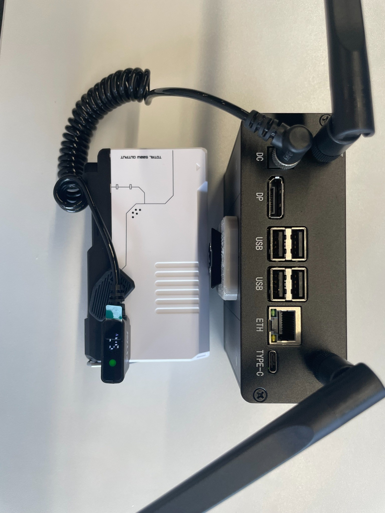
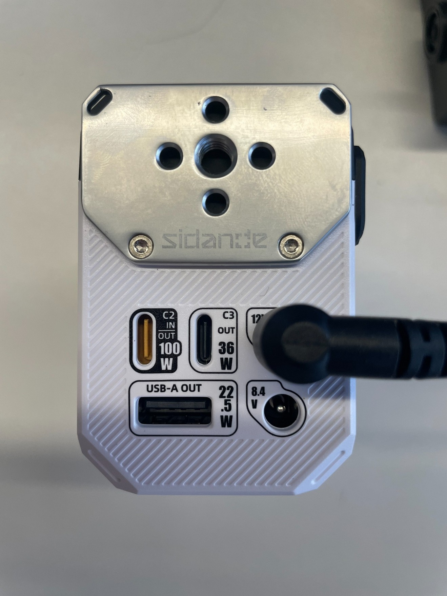
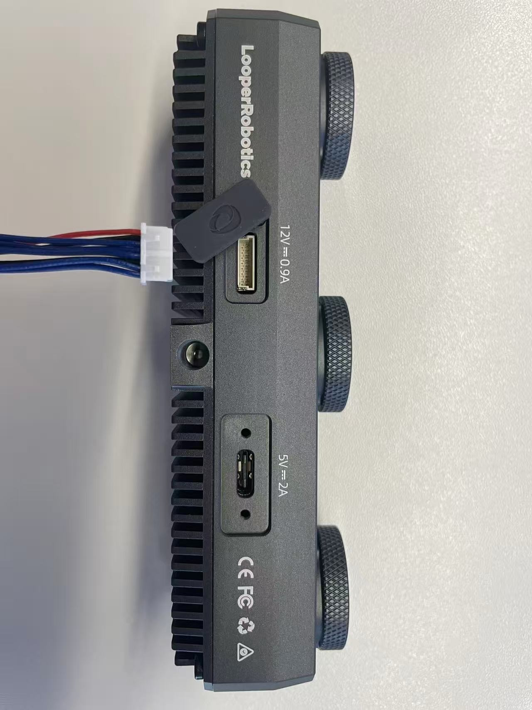
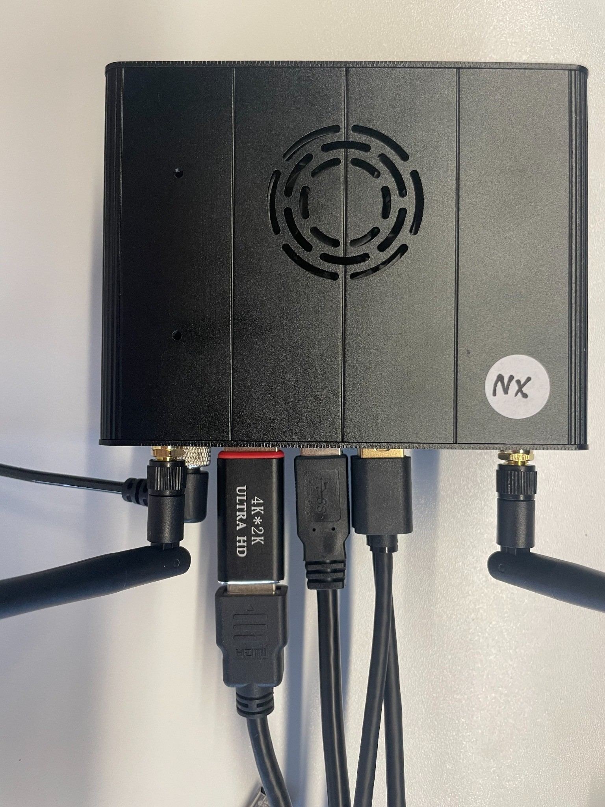
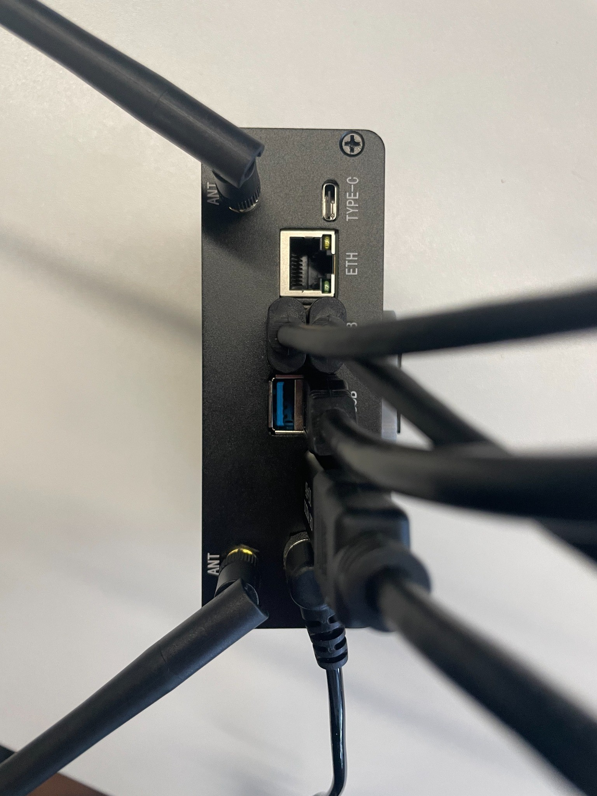

三相机 · 双手与头部 · 本地采集
Jetson Orin NX 8GB + Insight3 × 2 + Insight9 × 1

编制日期：2026-10-10；相机参数补充：2026-10-27（UTC+08:00）
适用范围：本项目 jetson-nx 现场设备的认识、安装、巡检与交接。
依据：用户提供的 8 页硬件安装手册、本机只读盘点、当前相机配置及项目文档。电池容量、线缆针脚与载板商品型号等未证实项见第 13 页。
两台 Insight3 分别对应右手、左手；Insight9 对应头部。Jetson 接收相机图像和传感器消息，运行建图、重定位、录制与预览。安装手册没有覆盖穿戴支架的机械装配尺寸。
上图是逻辑拓扑，不是插针图。三根线接主机面板 USB 口，系统仍可能把这些口列在同一个 Hub 下。Hub 是否集成于载板或另行安装，需拆机照片或载板资料确认。
| 部件 | 数量 | 规格／作用及证据 |
|---|---|---|
| Jetson 主机 | 1 台 | Orin NX 8GB；接收、处理、录制三路相机数据。本机设备树、CPU 与内存信息已核实。 |
| Insight3 | 2 台 | A 为右手，B 为左手；角色来自当前配置，命名经相机管理接口核实。 |
| Insight9 | 1 台 | A 为头部相机，承担头部视角采集与建图输入。 |
| 白色电池 | 1 台 | D-Tap 为 Jetson 供电；12V 输出为相机供电。型号、容量和各口电流上限未提供。 |
| D-Tap 转 DC 线 | 1 根 | 电池 → Jetson。是否内含稳压、DC 尺寸及极性待确认。 |
| 12V 转 8-pin 一分三线 | 1 根 | 电池 → 三台相机；沿用原安装手册的接头名称，不据此推断针脚。 |
| 相机 USB 数据线 | 3 根 | 相机 → 主机；三路本次均以 5 Gbit/s 连接。 |
| 四口 USB Hub | 1 个 USB 3.x Hub 节点 | Realtek 0bda:0489；另有 USB 2.0 Hub 节点 0bda:5489，不能据此认定是两只实体 Hub。 |
| NVMe 固态硬盘 | 2 块 | 系统盘实际约 128GB；数据盘 WDC PC SN530 512GB。详细说明见第 8 页。 |
| CPU / 内存 | 6 核 ARM Cortex-A78AE；标称 8GB，系统可见约 7.4 GiB。 |
| 设备树标识 | p3768-0000+p3767-0001-super；这是系统采用的载板／模块配置，不能替代实际载板厂家证明。 |
| 系统软件基线 | Ubuntu 22.04.5 LTS；L4T R36.4.3；内核 5.15.148-tegra。 |
| 散热 | 安装照片可见机壳风扇开口，系统存在风扇监测节点。背包装配需保留进出风空间。 |
本页是已知硬件清单，不是采购替换料号表；接口外形相同不代表电气规格相同。
| 标识／外形 | 用途 | 本设备说明 |
|---|---|---|
| DC 圆口 | 主机电源输入 | 连接配套 D-Tap 转 DC 电源线。允许输入范围、插头极性和尺寸尚未确认。 |
| DP | DisplayPort 显示输出 | 用于本机显示器；照片示例带显示转接器。本次系统显示 DP 已连接。 |
| USB-A × 4 | 相机或其他 USB 外设 | 照片可见两组双层口；三台相机在系统里共享同一 USB Hub 上行链路。 |
| ETH / RJ45 | 有线网络 | Realtek 千兆以太网控制器；本次无链路，不是当前三路相机的数据入口。 |
| TYPE-C | USB Type-C 外形接口 | 照片可辨认；具体主机／设备角色、供电能力和显示能力未核实，不作为本手册接线入口。 |
| ANT 天线端 | 无线天线连接 | 照片可见两根天线；系统识别 RTL8822CE Wi-Fi 与 Realtek 蓝牙。 |
usb0/usb1 名称误认为三路相机的固定入口。
主机：电池 D-Tap → 配套 D-Tap 转 DC 线 → Jetson DC。
相机：电池 12V → 一分三供电线 → 三台相机各自的 8-pin 电源连接。
本方案不依靠 Jetson 的 USB 口承担相机工作电源。USB 插好但没有 12V 供电，相机仍不能按本方案正常工作。
原照片中可见其他 USB-C、USB-A 电源口标识；这些口不是本手册指定的相机供电路径。
VDD_IN≈14.68V 只是主机监测点的瞬时读数，不能据此推算电池容量、剩余电量、允许输入范围或续航。待补：电池型号、Wh／Ah、D-Tap 电压范围、12V 电流上限、充电要求、线束额定值及稳压方式。照片中的单个功率标识不能替代上述规格。
| 信息 | 来源与用途 | 进入 Jetson 的路径 |
|---|---|---|
| 右手／左手图像 | Insight3 A / B；当前预览选用 infra1。 | 相机 USB → CDC-NCM → ROS 2 图像话题。 |
| 头部彩色图像 | Insight9 A；当前预览选用 color_compressed。 | 同上；图像流是否发布取决于相机输出配置。 |
| IMU、原生 VIO | 相机传感器／相机端估计结果；用于运动状态与轨迹。 | 随同相机网络链路进入 ROS 2，不额外铺设串口或 CAN 线。 |
| 统一坐标系位姿 | Jetson 上的 Insight9 建图、Insight3 重定位服务计算。 | 主机软件生成并传给前端／录制端，不是另一条外部硬件线路。 |
| 夹爪开口宽度 | 项目 UMI 路线由图像中的 ArUco 标记和实测标定提取。 | 使用已采集图像；未发现本设备经 CAN／串口读取夹爪编码器的证据。 |
| 麦克风与播报 | 配置支持 USB 音频输入／输出，本次未枚举到 USB 声卡。 | USB 音频驱动 → 主机语音服务；不经相机 DDS 链路。 |

“VIO”指视觉惯性里程计。Insight9＋Insight3 模式的实际输出分辨率和内部双目基线见第 7 页；帧率、IMU 频率和时间同步精度仍需单独验收。
配置为 jetson-nx：头部 Insight9 一台，右手、左手 Insight3 各一台。分辨率统一按宽 × 高（像素）书写，为相机当前发布尺寸。
| 设备／角色 | 图像流 | 每路分辨率 |
|---|---|---|
| Insight9 A／头部 | 彩色 RGB（JPEG） | 1088 × 1920 |
| Insight9 A／头部 | infra1 左目、infra2 右目 | 每目 544 × 640 |
| Insight3 A／右手 | infra1 左目、infra2 右目 | 每目 544 × 640 |
| Insight3 B／左手 | infra1 左目、infra2 右目 | 每目 544 × 640 |
图像消息尺寸与 CameraInfo 逐路一致；彩色 JPEG 另经解码核对。以上不是传感器最大规格，也不是预览缩放或训练导出尺寸。
| 设备 | 左右光心距离（标定值） | 便于记忆的近似值 |
|---|---|---|
| Insight9 A | 100.16 mm | 约 10 cm |
| Insight3 A | 34.86 mm | 约 3.5 cm |
| Insight3 B | 34.95 mm | 约 3.5 cm |
基线由实时 /tf_static 中各设备 camera_left → camera_right 的平移向量长度计算，并用左右 CameraInfo 投影矩阵交叉核对：B = |P右[3]/P右[0] − P左[3]/P左[0]|（米）。三台设备两种结果之差均小于 0.00001 mm。
这是当前三台实机的标定值，不代表所有同型号设备，也不代表机械尺测精度。实际计算应读取各自外参，不应将表中四舍五入数值硬编码。核验未启动录制、修改相机参数或重启服务。
原始 CameraInfo、图像尺寸、TF 及计算值：hardware-manual/camera-specs-2026-10-27.json。
本机三路相机枚举为 LooperRobotics 3652:0104，数据接口驱动均为 cdc_ncm。因此“USB 传输”和“网络通信”同时成立。相机管理 HTTP 接口与 ROS 2 消息共享这条物理链路，但管理接口能响应不等于图像已经出帧。
| 相机／用途 | 相机 IP → 主机 IP | 主机网卡 / USB 路径 |
|---|---|---|
| Insight3 A 右手 | 169.254.10.1→ 169.254.10.2/24 | enx020000000a012-1.4 |
| Insight3 B 左手 | 169.254.20.1→ 169.254.20.2/24 | enx0200000014012-1.3 |
| Insight9 A 头部 | 169.254.30.1→ 169.254.30.2/24 | enx020000001e012-1.2 |
以上是 2026-10-10 本机映射，管理接口已逐路核对 namespace。USB 路径会随换口改变；不能把系统路径后缀直接当成外壳印刷端口号。
192.168.19.222 可能随网络变化。远程看图依赖这段网络，但相机到主机的三条 USB 链路独立存在。| 设备 | 本机结果 | 用途 |
|---|---|---|
nvme0n1 | 实际 128,035,676,160 字节，约 119.24 GiB；型号字符串为 PUSKILL 1TB。 | 系统盘。型号文字与实际容量不符，本手册按实际容量记录。 |
nvme1n1 | WDC PC SN530 512GB；实际约 476.94 GiB，ext4 数据分区。 | 数据盘；本次录制目录回退到该盘。 |
| USB 存储 | 软件支持外置 USB 录制盘；本次未枚举到。 | 接入后需确认真实挂载位置和可写状态。 |
本次录制状态接口报告 using_fallback=true，实际来源为 /dev/nvme1n1p1[/insight/rosbags]。这表示当前写入目标在 NVMe 上，不能因为配置中有 USB 目录就认为文件已写入外置盘。
| 接口 | 已发现的硬件／驱动 | 本次状态与说明 |
|---|---|---|
| CAN | can0，mttcan 控制器。 | DOWN / STOPPED。外部收发器、接线端子和节点未确认；当前没有已证实的 CAN 采集链路。 |
| 板载串口 | ttyTHS1/2 及 ttyS0–3 节点。 | 节点存在不等于已连接传感器，也不能证明电平为 RS-232 或 RS-485。 |
| USB 串口 | 检查 ttyUSB* / ttyACM*。 | 本次未枚举到。 |
| 音频 | 板载 HDA / APE；软件支持 USB 音频设备。 | 本次没有 USB 声卡；麦克风、音响型号不能从当前现场读取。 |
| 输入设备 | Logitech Unifying Receiver，USB HID。 | 已连接；仅凭接收器不能确定具体键鼠型号。 |
| Wi-Fi / 蓝牙 | RTL8822CE PCIe 无线网卡；Realtek USB 蓝牙。 | Wi-Fi 已连接，蓝牙已枚举；蓝牙不是当前相机数据通道。 |


原安装手册采用整体通电流程；项目后续前端手册补充了“USB 先接、Jetson 就绪后给相机 12V”的现场经验。本页按实际分路控制能力区分；电池是否支持独立开关尚未确认，不能要求带电改接 8-pin 来实现顺序。
先接稳 USB，再检查画面是否持续更新。仅重插 USB 可能不足以恢复相机发现；需要重新给相机上电时，先结束录制并关闭相机供电支路，再恢复该支路。若无法独立控制相机电源，按完整关机流程断电后重启。
| 现象 | 优先检查 |
|---|---|
| Jetson 无法开机 | 电池输出、D-Tap、DC 输入口及接头固定。不要把相机的 12V 路径当成主机输入规格。 |
| 某台相机无数据 | 同时检查该路 12V 支路和 USB；再看是否有对应 cdc_ncm 网卡、相机管理响应以及实际图像／VIO。 |
| 三路同时消失 | 先查共用相机供电、一分三线、Hub 与上行路径。仅凭同时掉线不能认定电池电压异常。 |
| 相机 IP 可访问但无画面 | 管理服务与 ROS 数据不是同一验收项；继续看实际消息和页面更新，不要先改 DDS 域号。 |
| 录制没有落到 USB 盘 | 查实际挂载源与 using_fallback，确认外置盘是否存在并可写。不要在录制期间切换存储。 |
| 语音无输入或无播报 | 先确认 USB 音频硬件已枚举，再查语音服务；只有板载 HDA／APE 不代表外置麦克风和音响在线。 |
| 电源接头异常发热／有焦味 | 停止使用并按现场条件安全断电，检查线缆和接头；不要反复试插继续运行。 |
lsusb lsusb -t ip -br address ip -details link show can0 lsblk -o NAME,MODEL,SIZE,TYPE,FSTYPE,MOUNTPOINTS,TRAN cat /proc/asound/cards ls /sys/class/power_supply curl -fsS --max-time 5 http://127.0.0.1:8765/api/recording/status
依次核对：三台 3652:0104 相机、三条 cdc_ncm 接口、实际存储设备，以及录制状态中的 storage.active_path、mounted_source 和 using_fallback。
本手册覆盖硬件组成、接口用途、供电／数据关系、安装操作与基本巡检。当前资料尚不足以制作可据此自行配线的电气原理图或完整采购替换清单。
| 来源 | 支持内容 |
|---|---|
| 原硬件安装手册 共 8 页 | Insight_三相机系统_硬件安装手册.pdf：设备清单、D-Tap 与 12V 分路、8-pin 一分三、USB 接线及五张实物照片。照片来源页：2、4、5、6、7。 |
| 2026-10-10 11:33 +08:00 盘点 | 设备树、USB / PCIe 枚举、IP、CAN 状态、存储、音频、电源传感器；相机管理接口逐路读取及后端实际存储路径。 |
| 2026-10-27 相机参数只读核验 | 三台相机的 7 路 CameraInfo 与对应图像尺寸、实时静态 TF；分辨率及内部双目基线见第 7 页。 |
| 当前项目配置与文档 | config/cameras.json 的相机角色与预览流；docs/USAGE.md、OPENCLAW_VOICE.md 及前端手册中的使用和启动约束。 |
原始盘点摘要随手册保存：hardware-manual/inspection-2026-10-10.json。初版盘点没有订阅全速图像；10 月 27 日补充采用 12 秒有界只读订阅核对尺寸与外参。两次均未新建录制、重启服务或断电；尺寸核验不代替持续采集验收。
| 待补项目 | 需要确认的规格 |
|---|---|
| 电池与供电能力 | 品牌型号、额定电压与 Wh／Ah、D-Tap 范围、12V 电流上限、独立开关能力、充电方式与实测续航。 |
| 电源线束 | DC 尺寸／极性、8-pin 接头料号与针脚、线径、额定电流；有无稳压或保护模块。 |
| 载板与 USB Hub | 载板商品型号、实际允许输入、Hub 实体位置及料号。设备树配置不等于载板厂家认证。 |
| 相机与配件 | 各相机完整型号／硬件版本、电源额定值；USB 线长度／规格、未接入音频设备型号、穿戴支架尺寸。 |
| 性能与环境 | 整包重量、续航、环境适用范围，以及三路持续录制和同步精度验收。不得从链路速率推算这些指标。 |